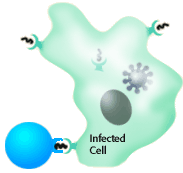

| Tutorial to help you answer the question:
Epstein Barr virus (EBV) infects endothelial cells and B cells. About
half of us are infected by the virus while very young, and do not
suffer disease. Around half of individuals who avoid the virus while
young are infected in the teenage years and develop a disease called
mononucleosis. In this disease, lymph nodes swell painfully as our
immune system produces large numbers of lymphocytes to eliminate
virus-producing cells. These lymphocytes are probably:
| A. |
B cells which produce antibody eliminating
virus-infected cells |
| B. |
Cytotoxic T cells to destroy
virus-containing cells |
|
C. |
Helper T cells which stimulate B cell
clonal selection |
| D. |
Granulocytes which invade areas of virus
production |
Tutorial
Cellular system
|
Pathogens that escape antibody detection can enter and infect
cells. The cellular system is composed of cytotoxic T cells
and helper T cells.
Cytotoxic T cells kill infected cells, preventing these cells
from producing more pathogen. Receptors on the surface of
cytotoxic T cells detect fragments of the virus on the surfaces
of infected cells. A successful immune response against a
virus means that we will make large numbers of virus specific
cytotoxic T cells. In an EBV infection, cytotoxic T cells
can make up the vast majority of our white blood cells.
|
 |
 |
 |
|
|
| T cells contain a T cell receptor that is like
the antibody of B cells. Each T cell has only one kind of receptor.
Analogous to the genetic events of antibody production, T cells
rearrange a set of genes coding for the T cell receptor. Each
T cell ends up with a unique receptor, but the population of
T cells contains billions of different receptors. |
|